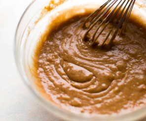

Baked Apple Cider Donuts
I love those delicious donuts that you get at the bakery…they’re rich,
dense, and
smell absolutely amazing. If
you’ve ever tried my chai spice donuts, pumpkin donuts, or cinnamon sugar donuts, you know that those bakery
beauties definitely inspired my donut recipes. They are somewhat dense and very muffin-like. These baked apple
cider donuts are no exception, though they are a little heavier with a more substantial and moister crumb.

Homemade apple cider donuts are cakey, dense, and intensely flavored. Baked, not fried, these fall
treats come
together quickly and easily—a convenient recipe with no mixer required. The trick for big flavor is to use
concentrated apple cider. Make the morning less hectic by reducing the apple cider the night before. Read on for
all the tips you need to make this Fall favorite!
Tell Me About these Apple Cider Donuts
- Texture: If you like cakey, moist, and dense donuts with a crumbly cinnamon-sugar coating, then look no
further
than this recipe.
- Flavor: Flavor-wise, they’re APPLE and CINNAMON and SPICE all over. They taste like they’re straight from
the
bakery!
- Ease: A simple mix of wet and dry ingredients plus the apple cider concentrate makes these a snap to prepare
for
crisp fall mornings. No mixer, rolling pin, or donut cutter required! Simply add the batter to a donut pan—I
use
and love this one. If you only have 1 pan, just bake a batch at a time.
- Time: In less than an hour, you’ll have an entire plate stacked high with homemade apple cider donuts.
How to Make Baked Apple Cider Donuts
These couldn’t be easier to make—no mixer required. Leave yourself enough time (at least a half hour) to
reduce down the apple cider before beginning. I like to do this step the night before so it’s ready to go in the
morning.
- Reduce the apple cider. In a small saucepan over low heat, simmer the apple cider until you’re left with
about
1/2 cup. Begin checking at 10 minutes, then every 3-5 minutes after that until you have 1/2 cup of cider
reduction. Mine takes about 20 minutes. Set aside to cool for 10 minutes (or complete this step ahead of
time).
- Combine the dry ingredients together.
- Combine the wet ingredients together, except for the apple cider.
- Mix the wet and dry ingredients together. Add the apple cider.
Whisk everything together until smooth and combined. You’ll notice the batter will be slightly thick.
We want thick batter for cakey and dense donuts.


- Fill the donut pan. Fill each donut cup about halfway. My
trick for this? Use a zipped-top bag. Add the
batter to the bag, cut off a corner, and pipe it into the donut pan filling only about halfway. This
trick makes
transferring the batter neat, quick, and easy.
- Bake. Only about 10 minutes of bake time—told you they were quick. To test doneness, poke your finger
into the top of the donut. If the donut bounces back, they’re done. Once they are out of the oven, let
them cool
for 2 minutes, then invert the pan to release the donuts. You can then re-grease the donut pan and bake
the
remaining donut batter. (If you have 2 donut pans, go ahead and bake both trays at once.)
- Coat the donuts. Combine the granulated sugar, cinnamon, and apple pie spice together in a medium bowl.
Once
cool enough to handle, dunk both sides of each donut in the melted butter, then coat generously in the
apple
spice topping


This Trick Changes Everything
The trick to apple cider donuts is to flavor them with concentrated apple cider. Apple cider that has been
reduced
down on the stove is thick and potent, adding big flavor without excess liquid. Apple cider, either store-bought
or this homemade apple cider, is certainly delicious to drink but it won’t add enough flavor to baked goods.
Taking 20 minutes to reduce the cider down transforms regular donuts into amazing apple cider donuts. If you
like
to keep things simple in the morning, reduce the cider the night before. That will save you cooling time, too,
because the cider must cool for a few minutes before you add it to the batter.
To reduce your apple cider, simply follow these simple steps:
- Pour 1½ cups apple cider into a small saucepan. We will reduce this to ½ cup
- Place on low heat and set a timer for 10 minutes, stirring occasionally.
- Begin checking at 10 minutes, and then every 3-5 minutes after that until you have ½ cup of cider reduction
(approximately 20 minutes).
- Remove from heat and allow to cool for at least 10 minutes before using in the batter.
Prep Time: 35 minutes
Cook Time: 10 minutes
Total Time: 50 minutes
Yield: 12-14 donuts
Ingredients
- 1 and 1/2 cups (360ml) apple cider
- 2 cups (250g) all-purpose flour (spooned & leveled)*
- 1 teaspoon baking soda
- 3/4 teaspoon baking powder
- 1 teaspoon ground cinnamon
- 1 teaspoon apple pie spice*
- 1/4 teaspoon salt
- 2 Tablespoons (28g) unsalted butter, melted
- 1 large egg, at room temperature
- 1/2 cup (100g) packed light or dark brown sugar
- 1/2 cup (100g) granulated sugar
- 1/2 cup (120ml) milk, at room temperature*
- 1 teaspoon pure vanilla extract
Topping
- 1 cup (200g) granulated sugar
- 3/4 teaspoon ground cinnamon
- 3/4 teaspoon apple pie spice*
- 6 Tablespoons (85g) unsalted butter, melted
Instructions
- Reduce the apple cider: Stirring occasionally, simmer the apple cider in a small saucepan over low heat
until
you’re left with about 1/2 cup. Start checking at 10 minutes, 15 minutes, 20 minutes, etc until you have
1/2
cup (120ml). Mine takes about 20 minutes. If there are any spices or solids on top of your reduced apple
cider,
leave them. Set aside to cool for 10 minutes.
- Preheat oven to 350°F (177°C). Spray donut pan with non-stick spray. Set aside.
- Make the donuts: Whisk the flour, baking soda, baking powder, cinnamon, apple pie spice, and salt
together
in
a large bowl. Set aside.
- Whisk the melted butter, egg, brown sugar, granulated sugar, milk, and vanilla extract together. Pour
into
the
dry ingredients, add the reduced apple cider, and whisk everything together until smooth and combined.
Batter
will be slightly thick.
- Spoon the batter into the donut cavities—for ease, I highly recommend using a large zipped-top bag. Cut
a
corner off the bottom of the bag and pipe the batter into each donut cup, filling about halfway.
- Bake for 10-11 minutes or until the edges and tops are lightly browned. To test, poke your finger into
the
top
of the donut. If the donut bounces back, they’re done. Cool donuts for 2 minutes then transfer to a wire
rack.
Re-grease the pan and bake the remaining donut batter.
- Coat the donuts: Combine the granulated sugar, cinnamon, and apple pie spice together in a medium bowl.
Once
cool enough to handle, dunk both sides of each donut in the melted butter, then generously in the apple
spice
topping.
- Donuts are best served immediately. Leftovers keep well covered tightly at room temperature for up to 2
days
or in the refrigerator for up to 5 days.
Enjoy!
""